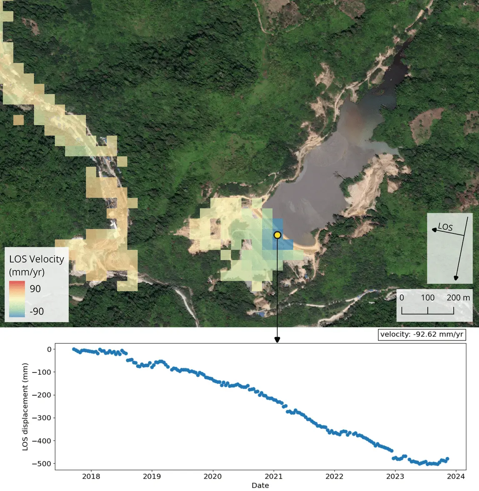

Products
Contact Us
Geospectrum Remote Sensing | March 11, 2024
READ TIME: 9 MINUTES
The Earth is constantly moving due to natural processes such as erosion, weathering,
tectonics, or
groundwater fluctuations. Anthropogenic activities also induce ground surface deformation, with examples
including tunneling activities, underground water and mineral resource extraction, and urban soil
compaction. Additionally, man-made structures undergo inevitable degradation over time and eventually
become
susceptible to failure.
Across different industries, these issues compromise business operations and threaten human safety. To
manage them, companies employ the appropriate engineering measures. In addition, frequent monitoring and
maintenance activities are necessary in mitigating potential safety risks from any engineering lapses or
limitations. This is especially true for organizations that deal with critical logistics and
infrastructure,
examples of such are those in the construction and mining industries. Early detection of structural
issues
would prevent unplanned expenses and extend the design life of their assets, thereby reducing the risk
of
financial losses.
The traditional way of monitoring deformation is through precise and periodic surveying [Uren & Price,
1994]. It involves the selection of target points distributed across the structure or land
area.
However,
this approach is time-consuming, labor-intensive, and routine surveys can be disrupted by factors such
as
inclement weather, inaccessibility of survey points, or absence of skilled personnel. More modern
methods
make use of sensors installed at strategic points across a structure for a more automated data
acquisition
[Moore, 1992]. Although more convenient, these are expensive, and the number of deployable sensors would
be
limited according to budget constraints. The issue of limited sampling points applies to both surveying
and
automated sensors, and it may lead to data gaps especially at unknowingly critical areas.
Geospectrum can help companies monitor their assets in a more efficient and cost-effective way by
leveraging the power of synthetic aperture radar (SAR) satellites. The frequent returns, all-weather
image acquisition, and wide area coverage make SAR satellites very ideal for monitoring large land areas
and infrastructure. Through the technique called Interferometric SAR (InSAR) [Simons & Rosen ,2007], we
are able to measure between different SAR images the incremental movements of target surfaces at
millimetric precision. Within a specified area of interest, we measure the cumulative displacements over
several years to give you a visualization of the time series motion for each of the regularly spaced
sampling points.
The greatest advantage of InSAR monitoring is that routine data collection is entirely done remotely
from space. Opting for this approach thereby eliminates the need for either onsite manual measurements
or installation and maintenance of sensors, which consequently reduces costs. This method is applicable
even in remote, hard-to-access rural areas. Sample points are densely distributed across surfaces of
interest, ensuring a spatially continuous monitoring. We can provide analytics for historical
deformation up to the past six years.
By retrieving the movements of your assets from several years ago up to the present, we can aid you in
the assessment of ground stability and structural health, and in formulating timely and appropriate
business decisions.
The Metro Manila Subway is one of the Philippine government’s major infrastructure projects of the
century. Excavation started in eastern Valenzuela City in January 2023 [Embassy of Japan, 2023], and
construction is currently underway for stations along the railway’s route from Valenzuela to North
Avenue, based on the latest reports [Cordero, 2023]. One of the primary concerns regarding the project
is its effect on ground stability. We performed an InSAR analysis over northern Metro Manila to image
ground movements since 2017.
Looking at the time series of measured displacements along the initial segments of the subway network,
we observe no deviation of the trends after January 2023 relative to the pre-excavation background
velocities of about -10 to -12 mm/yr. What is more apparent, on the other hand, is the velocity contrast
along the border of Quezon City and Marikina. This is a manifestation of the slow tectonic movement
along the West Valley Fault [Rimando & Knuepfer, 2006]. The highest velocities of -40 to -60 mm/yr are
observed along the coasts of Manila Bay, which have previously been documented to be subsiding due to
groundwater over-extraction [Eco et al., 2020]. These observations
illustrate the sensitivity of InSAR
even to subtle tectonic motion. These also highlight InSAR’s ability to map out the variability of
ground deformation, making it a reliable tool in identifying areas that might be of concern.
Velocity map of ground movements over northern Metro Manila (top) and time series of displacements at a point over an ongoing excavation for the initial segments of the Metro Manila Subway (bottom). Measurements are oriented along the line of sight (LOS) of the side-looking SAR satellite, with positive values indicating motion toward the satellite, while negative values indicating motion away from the satellite. Basemap: ESRI Satellite Imagery.
Another case where InSAR monitoring would be useful is in assessing the stability of critical structures. For the mining and energy sectors, tailings storage facilities are vital components in their business operations and have to be managed seriously as these are where waste byproducts from processing are held and treated. These are monitored closely to prevent any leakage and avoid possible environmental accidents. We applied InSAR analysis over a gold mine in Maco, Davao de Oro to illustrate how we are able to monitor the millimetric displacements of its tailings dam. Examining the exposed surfaces of the dam and the nearby built-up valley that can be imaged by SAR satellites, we detect relatively faster motion at a maximum velocity of -93 mm/yr at the middle portion of the dam’s crest. Such information would inform on-site managers and engineers on the state of their facilities, which they can then use as guide for targeted maintenance activities.
Velocity map of movements over a mining area in Maco, Davao de Oro (top) and time series of displacements at the crest of the mine’s tailings dam (bottom). Measurements are oriented along the line of sight (LOS) of the side-looking SAR satellite, with positive values indicating motion toward the satellite, while negative values indicating motion away from the satellite. Basemap: ESRI Satellite Imagery.
Apart from the illustrated use cases above, there are several similar scenarios where InSAR monitoring can be beneficial for a variety of sectors. Depending on your needs, we can provide you with the relevant information and analytics that will guide you in formulating business decisions.
With InSAR, it is possible to monitor dense sample points along the surfaces of moderate to large critical structures. We can provide historical deformation trends and continuous monitoring as new SAR data is acquired. InSAR monitoring can be applied for large public infrastructure (e.g., airports, seaports, bridges, highways), critical projects (e.g., dams, dikes, power plants), underground structures (e.g., tunnels, subways, mines), and reclaimed lands.
A variety of natural hazards exist in a certain locality. Depending on where your assets are located, we can use InSAR to monitor ground movement and identify precursory trends of certain hazards. Slopes can be observed to mitigate the risk of landslides or slope failures that would potentially block access roads or damage infrastructure. InSAR can effectively monitor ground settling due to natural or modified soil properties of an area. Ground surface deformation linked to operations of certain sectors (e.g., underground excavation, groundwater extraction, and other subsurface activities) can be detected before any catastrophic failures occur.
We can assist you in the site investigation and selection for your projects by assessing the stability
conditions of a specified land area. Through InSAR, we can determine the historical behavior of the
ground from several years ago up to the present. Such information can be useful in optimizing
construction design or in identifying the necessary risk mitigation measures during the early stages of
project development. This service can be especially useful if your project site is underlain by soil
cover and geological conditions that are prone to subsidence (e.g., coastal,
fluvial, and karstic
regions) or is located along terrain that might be susceptible to mass movements (e.g., mountainous
locations).
Interested in a deformation monitoring solution? Shoot us an email at info@geospectrum.com.ph or contact
us at 0927-808-7953. You can also check out our website at www.geospectrum.com.ph to learn more about
our products and services.
Uren, J., Price, W.F. (1994). Deformation Monitoring. In: Surveying for Engineers. Palgrave, London.
https://doi.org/10.1007/978-1-349-12950-8_15
Moore, J. F. A. (1992). Monitoring building structures (No. 15864). J. F. Moore (Ed.). Glasgow and
London: Blackie. https://doi.org/10.1007/978-1-4757-5894-8
Simons, M., Rosen P.A. (2007). Interferometric Synthetic Aperture Radar Geodesy. In: Gerald Schubert
(editor-in-chief) Treatise on Geophysics, 2nd edition, Vol 3.
https://doi.org/10.1016/B978-044452748-6.00059-6
Embassy of Japan in the Philippines. (2023, Jan. 9). Japan’s Tunnel Boring Machine Starts Manila Subway
Excavation. Embassy of Japan in the Philippines.
https://www.ph.emb-japan.go.jp/itpr_en/11_000001_01080.html
Cordero, T. (2023, Jul. 22). Metro Manila subway construction progress at 5.6%; right of way a challenge
— DOTr. GMA News Online.
https://www.gmanetwork.com/news/topstories/metro/876575/metro-manila-subway-construction-progress-at-5-6-right-of-way-a-challenge-dotr/story/
Rimando, R. E., and Knuepfer, P. L. (2006). Neotectonics of the Marikina Valley fault system (MVFS) and
tectonic framework of structures in northern and central Luzon, Philippines. Tectonophysics 415 (1-4),
17–38. https://doi.org/10.1016/j.tecto.2005.11.009
Eco, R.C., Rodolfo, K.S., Sulapas, J.J., Morales Rivera, A.M., Lagmay, A.M.F., Amelung, F. (2020).
Disaster in Slow Motion: Widespread Land Subsidence in and Around Metro Manila, Philippines Quantified
by Insar Time-Series Analysis. JSM Environ Sci Ecol 8(1): 1068.